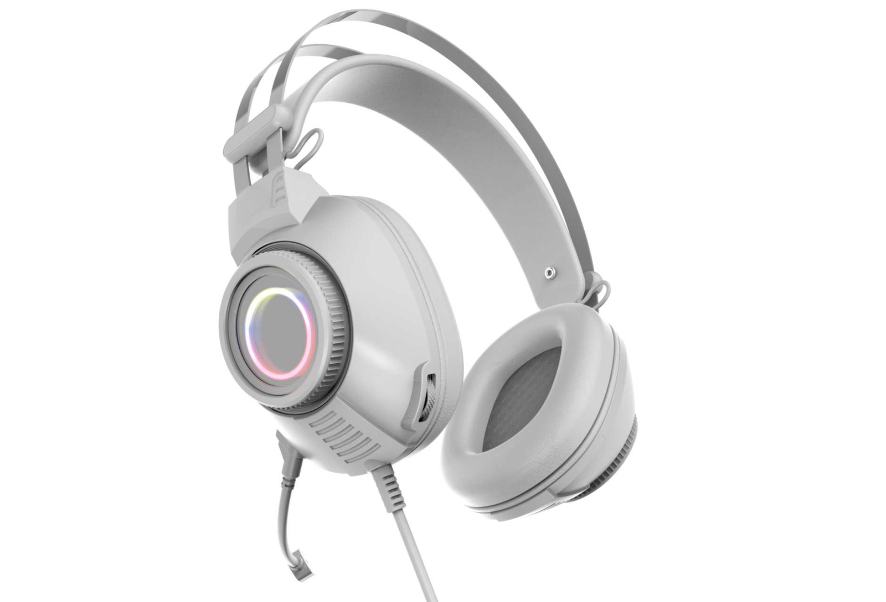
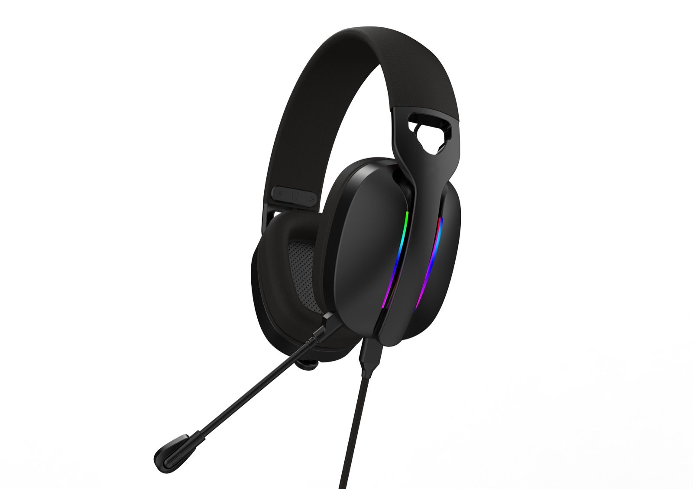

G942 RGB Wired Gaming Headset
The current catalogue lists a 3.5 mm plus USB interface, 20 Hz–20 kHz frequency response and detachable microphone. Confirm the selected version before quotation.
Ask about G942 wired samples
Wired gaming headset manufacturer
Source wired RGB gaming headsets for your private-label range. Start with the audio connection: a 3.5mm headset with USB-powered lighting is not the same as a USB-audio headset. Compare G942 and the wired G935 version below, then confirm samples, logos, packaging and separately purchased adapters. TALRIVO represents our own audio manufacturing business in China.

Choose the audio connection
A USB plug or illuminated earcup does not establish the audio path. Use these configuration differences to define the requirement, then confirm which version is available for the model you select. This is a selection guide, not a device compatibility test report.
| Buyer requirement | 3.5mm audio + USB lighting | USB-audio configuration |
|---|---|---|
| Playback and microphone | Both use the combined 4-pole CTIA 3.5mm plug in the configuration described in our USB guide. | Both use USB audio circuitry; confirm the selected headset version. |
| USB disconnected | Audio and microphone can work through a compatible 3.5mm headset jack; lights stay off. | No audio in USB mode when USB is disconnected. |
| Computer has separate headphone and microphone jacks | A suitable CTIA headset Y-splitter is needed. It is not included in the described standard package or headset unit price. | The analogue jacks are not used for USB audio. Confirm device and operating-system support. |
| Virtual 7.1, EQ or lighting controls | Confirm each function separately; a USB lighting plug does not establish USB audio or virtual surround support. | Confirm hardware, software and operating-system requirements; USB alone does not establish these features. |
View the USB-A and 3.5mm connector illustration and the connection test plan. The illustration is not a photograph of a completed test.
Model selection
Start with G942 and the wired G935 version for a wired RGB range. The catalogue lists 3.5mm plus USB interfaces for both; it does not establish that every version offers USB audio. Confirm the audio path, USB function, microphone and target devices on the selected sample.
The current catalogue lists a 3.5 mm plus USB interface, 20 Hz–20 kHz frequency response and detachable microphone. Confirm the selected version before quotation.
Ask about G942 wired samples
The current catalogue lists a 3.5 mm plus USB interface and detachable microphone. Keep the wired version separate from G935 wireless when requesting a sample.
Ask about the wired G935 versionNeed wireless use as well? Compare the 2.4GHz wireless and tri-mode headset collection separately. G936 and G946 are wireless or multi-mode references, not equivalent wired-only products.
Buyer decision
Do not assume every 3.5 mm plus USB headset uses the same connection, lighting or control arrangement. Confirm the selected model and sample version. Download the wired headset sample checklist (TXT) to record connection tests, microphone results and accessory requirements.
Procurement path
This sequence helps buyers avoid comparing unmatched configurations or requesting packaging before the base model is clear.
Share the destination country, buyer type and sales channel so the shortlist matches the intended product role.
Explain the intended audio plug, USB lighting or power direction, target device use and any required accessory questions.
Check fit, product finish, controls, microphone, cable, RGB direction and the real connection setup on each sample.
After model selection, send quantity range, logo needs, packaging direction, sample timing and document questions.
Buyer resources
Use the collection page to compare wired RGB, 2.4G wireless and tri-mode headset directions before selecting samples.
Decide whether the range needs wired RGB, 2.4G wireless or a mixed gaming headset assortment.
Prepare repeatable checks for appearance, comfort, controls, microphone, connection and packaging discussion.
Share market, channel, model direction, quantity range, branding needs and sample timing in the first message.
Product FAQ
Wired gaming headsets can support value-focused product ranges, retail bundles and channels that need a clear wired connection and RGB appearance. The exact interface should be confirmed by model.
Yes. Buyers can compare models and samples, then discuss logo, color, packaging, manual language and accessory direction for the selected version.
Confirm the listed audio plug, USB lighting or power direction, cable and control setup, target device use and accessory set for the selected model before quotation.
Include the destination market, sales channel, model interest, required interface, quantity range, sample timing, logo needs, packaging direction and document questions.
Yes. A compact shortlist can be prepared after the buyer shares the target market, channel, product direction and quantity range.
Related pages
Share your destination market, sales channel, required interface, quantity range, sample timing and branding needs. TALRIVO can recommend suitable wired models for review.